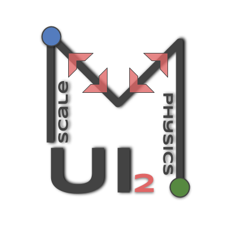
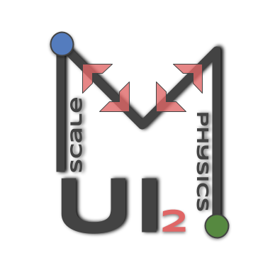

The key library of this suite, the Multiscale Universal Interface (MUI), provides a C++ header-only implementation that is based around the MPI Multiple-Program Multiple-Data (MPMPD) paradigm and quickly embeds into new and existing codes. It enables either tight or loose coupling of the physics of a problem by creating an interface between the codes that data such as velocity, force or pressure is passed through. MUI is a high-level library that enables message passing in complex multi-program scenarios using only a few lines of additional code and with no need to keep track of complex communication world patterns. Wrappers are provided for Python, C and Fortran.
It is especially useful in HPC environments, where it can minimise communications between ranks of two or more MPI-parallelised codes. MUI also provides capability to interpolate data both in space and time, it provides a number of default interpolations and is also designed to be easily extensible.
Tang Y.-H., Kudo, S., Bian, X., Li, Z., & Karniadakis, G. E. Multiscale Universal Interface: A Concurrent Framework for Coupling Heterogeneous Solvers, Journal of Computational Physics, 2015, 297.15, 13-31.